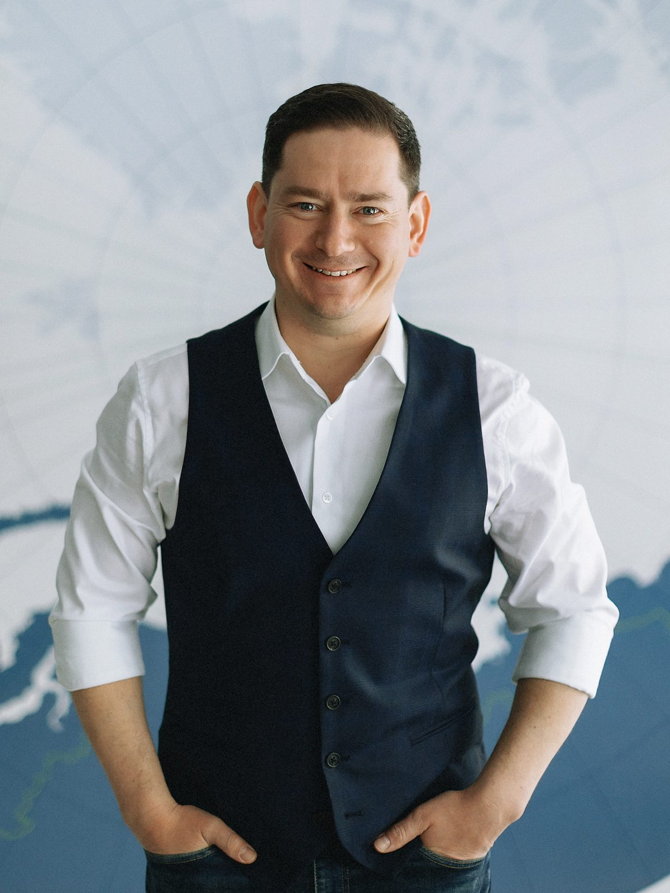

ИИ внедрили — эффекта нет
Разберём, что пошло не так: метрика, процесс или выбор задачи.
Бюро обоснованного ИИ · Диагностика до внедрения
По каждому процессу — вердикт: ИИ, гибрид, обычная автоматизация или «пока не нужно». Сначала диагностика и подписанное заключение с экономикой и рисками — потом работа.
Решение подписывает человек · особые мнения экспертов сохраняются
Задачи
Разберём, что пошло не так: метрика, процесс или выбор задачи.
По каждому процессу — вердикт с обоснованием, включая «ИИ не нужен».
Мы зарабатываем на заключении, а не на человеко-часах внедрения — у нас есть право сказать «нет».
Закрытые контуры, 152-ФЗ, отраслевые запреты — в заключении есть статус допуска и вето.
Бизнес-кейс с формулой и допущениями до первого рубля внедрения.
Порядок запуска и бюджет по волнам — что первым, что при тираже.
Как работаем
Ваш контекст и вопросы. На выходе — первичная карта: где есть смысл смотреть, а где точно нет.
Вердикт и допуск по каждому процессу, бизнес-кейс, дорожная карта — в подписанном заключении. Заключение — самостоятельный продукт, а не приглашение на внедрение.
Бюро делает то, что прошло диагностику, — или ведёт авторский надзор за вашими подрядчиками.
Опыт
Углеводороды и руды. Безопасность и логистика в суровых средах: шельф, лёд, удалённость.
Межведомственная интеграция и городские данные: 60+ ведомств, закрытые контуры, 44-ФЗ / 223-ФЗ.
Весь жизненный цикл объекта: изыскания, проектирование, строительство, эксплуатация, продажи.
Флот и риски: метеообеспечение, контроль страхового покрытия, экономика редких, но крупных событий.
Гео-ML мониторинг полей: от аэрофотосъёмки до результата для инспектора за 2 часа вместо 3 дней.
Медицинские изделия и диагностика: ИИ-функции, регистрация ПО как медизделия, ЭПР, клиническая валидация.
Форматы
Шаг 1
Короткая анкета и первичная карта: где ИИ стоит рассмотреть, а где точно нет. Онлайн через Council 7+1.
бесплатно · скоро
Шаг 2
Фикс-скоуп: аудит процессов, матрица решений, бизнес-кейс, дорожная карта. 2–4 недели.
от 500 000 руб. за этап · возможна доля от эффекта (revenue share)
Шаг 3
Внешний директор по ИИ на неполную занятость: стратегия, управление ИИ-функцией, контроль внедрений. От 3 месяцев.
от 200 000 руб./мес · день в неделю — от 350 000 руб./мес
Шаг 4
Команда бюро делает то, что прошло диагностику. Стандарт промышленной эксплуатации, развёртывание на площадке заказчика при необходимости.
оценка после диагностики
Шаг 4 · или
Внедряют ваши разработчики или подрядчики, бюро контролирует соответствие заключению и архитектуре, принимает этапы.
по объёму внедрения
Бюро
Сергей Зубков лично ведёт диагностику и архитектуру и подписывает каждое заключение. Выводы по праву, финансам и отрасли проверяют приглашённые эксперты. Внедряет инженерная команда бюро или ваши подрядчики под нашим авторским надзором.
20+ лет в IT и данных, 8+ лет в ИИ-проектах, 3 ИИ-продукта на рынке. Hands-on: сам проектирует и пишет код.

45 минут: ваш контекст и вопросы. На выходе — понимание, какой объём диагностики вам действительно нужен.